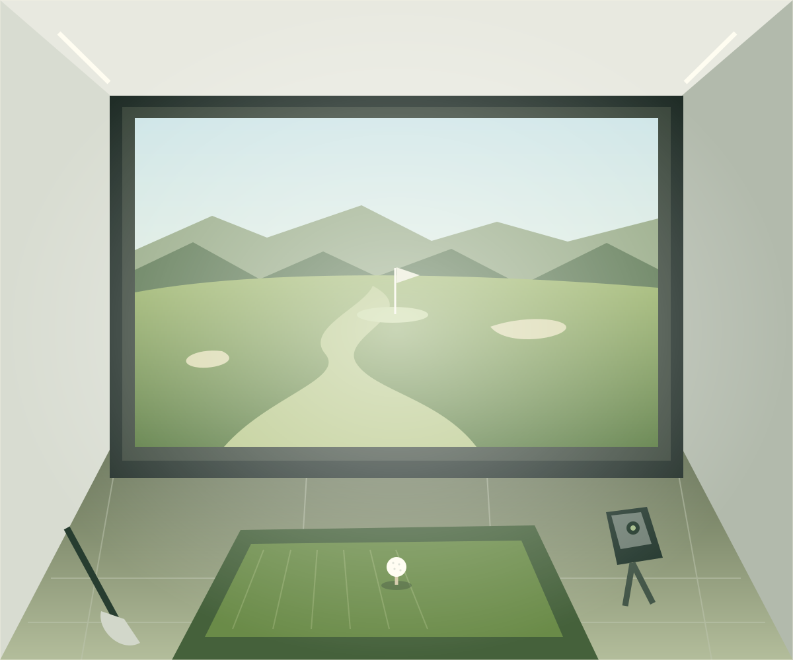

01
ON YOUR SCHEDULE
24時間、いつでも。
早朝も、仕事帰りも。ライフスタイルに合わせて、自分のペースで練習できます。
24 HOURSSAKATA, YAMAGATA / INDOOR GOLF
YOUR SWING.
YOUR TIME.
ゴルフを、もっと自由に。もっと日常に。
酒田市中町の24時間インドアゴルフスペース。

01 / OUR FEATURES
天候にも、時間にも、縛られない。
一球に集中できる環境で、
あなたらしいゴルフを。
ON YOUR SCHEDULE
早朝も、仕事帰りも。ライフスタイルに合わせて、自分のペースで練習できます。
24 HOURSALL WEATHER, ALL SEASON
雨の日も、雪の日も、インドアで。季節を問わず、ゴルフを日常の習慣に。
INDOOR SPACEKNOW YOUR SWING
FlightScope Range Gen2を導入。ショットのデータを、次の一球へのヒントに。
FLIGHTSCOPEIMAGE ILLUSTRATION / 実際の施設写真ではありません
02 / THE SPACE
街の中に、自分のスイングと向き合う時間を。
3つの打席とシミュレーターを備えた、
酒田のインドアゴルフスペースです。
03 / MEMBERSHIP
ご利用スタイルに合わせた料金プランを準備しています。
料金・プランの詳細は、決まり次第
こちらのページでお知らせします。
04 / HOW TO USE
ご利用開始までの流れをご案内します。
料金や会員・ビジターのご利用条件は、準備が整い次第ご案内します。
予約システムを準備中です。現在、このサイトから予約はできません。
HARA BLDG. 4Fへ。入退館方法などの詳細は、後日ご案内します。
ご利用の流れは予定です。正式な手順は、予約受付開始時にお知らせします。
05 / FAQ
はじめての方へ。
SWING LABは24時間営業のインドアゴルフスペースです。ご利用条件や入退館の詳細は、準備が整い次第ご案内します。
FlightScope Range Gen2を導入しています。打席数は3打席です。設備の詳細は順次掲載予定です。
料金プラン・予約システムは現在準備中です。会員予約・ビジター予約のボタンからは準備状況をご確認いただけますが、実際の予約はできません。
レンタル用品・駐車場のご案内は現在準備中です。詳細が決まり次第、このサイトでお知らせします。
06 / ACCESS
営業時間24時間
Googleマップで開く （新しいタブ）地図が表示されない場合は「Googleマップで開く」をご利用ください。
YOUR NEXT SWING STARTS HERE.